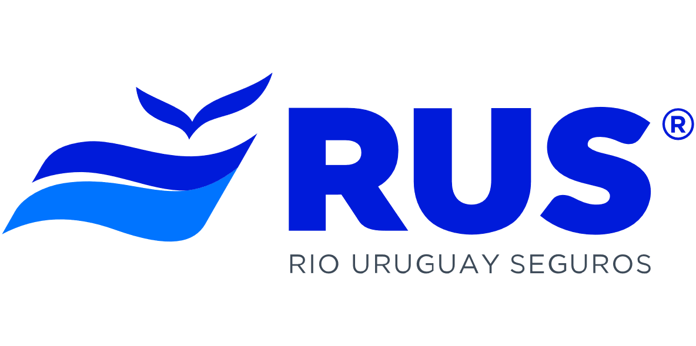

¿Quienes somos?
En Climber Serguros, somos una Familia de Productores asesores de Serguros, dedicada al asesoramiento profesional y venta de seguros generales, dirigida por personal matriculado, con mas de 20 años de experiencia en el rubro y un gran fanatismo por la escalada y montaña.
¿Donde podes encontrarnos?
Radicados en la localidad de Cipolletti, Rio Negro. Pero con alcance en todo el territorio Argentino.
¿Que es un PAS?
Un Productor Asesor de Seguros (PAS) es un intermediario entre el asegurado y la compañía de seguros, que asesora a las personas para venderle seguros que mejor se adapten a las necesidades de cada uno. Existen dos tipos de productores: los habilitados a intermediar en todos los ramos de seguros o los habilitados a intermediar respecto de seguros de vida.
¿Con que compañias trabajamos?
PAS Asociados y Matriculas:
Armada Mabel Ines 83984 Mon Roberto Oscar 48261 Mon Emiliano 65846 Mon Matias Andres 85250 Mon Sebastián 73957
RESOLUCIÓN SSN 37588 – SERVICIO DE ATENCIÓN AL ASEGURADO
La entidad aseguradora dispone de un Servicio de Atención al Asegurado que atenderá las consultas y reclamos que presenten los tomadores de seguros, asegurados, beneficiarios y/o derechohabientes.